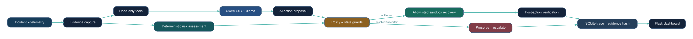

01
Investigate
Collect health signals and let Qwen3 select read-only inspection tools.
Meet SANAD | سند — a security-aware AI prototype that investigates failures, forecasts risks, executes policy-authorized sandbox recovery, and learns from verified observations.
Monitoring can tell us when something breaks. The harder questions come next: What happened? What should we do? Is it safe to act?
SANAD explores a different approach: AI-driven investigation paired with independent controls that can authorize, correct, or block a proposed action.
A security-governed response path, complemented by a separate forecast-and-feedback learning loop.
Collect health signals and let Qwen3 select read-only inspection tools.
Classify the incident and propose an evidence-based next action.
Independent state and policy guards correct or block unsuitable proposals.
Check simulated system health and record an auditable outcome.
SANAD uses verified observations to calibrate future forecasts. Learning informs decisions; it never overrides independent safety policy.
Collect recent simulated request-rate samples and evaluate current incident conditions.
Estimate the next sample using a simple trend heuristic and flag possible future overload.
Compare the predicted value with a supplied next observation and store the forecast error.
Apply feedback from verified historical errors. Incident recovery memory remains advisory, not an authorization source.
Forecast warnings support monitoring and escalation. They do not automatically execute disruptive preventive recovery. The forecast calibration is not Qwen3 weight training.
Explore five illustrated sandbox incident outcomes. These interactive cards are static previews of the Flask prototype scenarios, not live incident execution.
SANAD identifies an invalid deployment configuration, proposes a restore action, and verifies the simulated service is healthy afterward.
Recorded synthetic development evaluations with Qwen3 enabled. End-to-end scenario success is not the same as model reasoning accuracy.
Synthetic development results, not production or unseen fault-family validation. The independent safety controller corrected or blocked unsuitable AI proposals. Deterministic fallback also passed the 12 adversarial cases, so incremental AI benefit is not yet established. Re-run the final restored build before treating these as release results.
When an AI proposes a service restart without enough evidence, SANAD's independent policy can block it and record a safe escalation. The agent doesn't get to override its own guardrails.
A working Python prototype with a deliberately bounded execution environment.
SANAD operates in a local file-backed incident simulator. It does not execute arbitrary model-generated shell commands or modify production services. Verification refers to simulator health; escalation is recorded locally, not sent to a real response team.

SANAD AI | سند — Autonomous Recovery. Trusted by Design.
Local Flask prototype · Public source repository · No hosted live execution